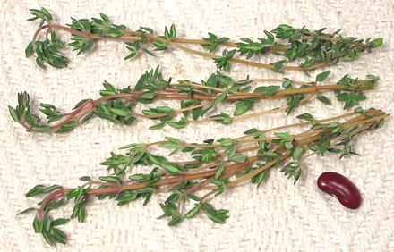

Thyme

[Zatar (Farsi & other), Thymus vulgaris (Mint family)]
While there are over 300 species of thyme, nearly all those of culinary
use are varieties of T. vulgaris, a native of southern Europe and
the Near East. Thyme is used especially for flavoring meat dishes and
soup stocks. It is a very important herb throughout southern Europe,
North Africa, Anatolia, and the Near and Middle East as far as Persia,
then tapering off into India. It is also important in the Caribbean and
is well known as a powerful medicinal throughout its range. Thyme dries
relatively well so it is often used as a dried herb.
More on Herbs.
More on Mints.
Buying:
Fresh, this herb can be found even in the herb
section of most North American supermarkets. Dried it can be found in
every spice section. Note that, though the Near and Middle Eastern name
for Thyme is "Zatar", in the markets this word generally describes a
spice mix containing thyme and/or its near relatives along with other
herbs and spices.
Storing:
Leafy stems, if fresh and in good condition,
will keep about a week loosely wrapped and refrigerated. Dried thyme
should be kept in a tightly sealed container away from heat and light.
It is fairly durable and can be used used for at least 6 months, maybe
up to a year.
Measures:
"A sprig of thyme" is how thousands of
recipes call for fresh thyme, a measure which they conveniently fail to
define. I'm going to define it here as what has worked well for me - a
single main stem about 5 inches long including its minor side branches.
The photo at the top of this page includes three "sprigs", and I'm
calling the middle one the "standard" sprig, and the lower one a
"large sprig".
Recipes calling for fresh thyme in teaspoon measure mean for it to
be leaves stripped from the stems. This is not always easy, as the stems
often break up when you try to strip the leaves, or the leaves simply
don't want to come off. A sprig, as defined above, will yield about 1/3
teaspoon of fresh leaves (loosely packed).
Dried thyme and fresh thyme are interchangeable with some difference
in flavor. The standard ratio is 3 t fresh = 1 t dry, but this is often
hard to measure. Figure 1/4 teaspoon of dried thyme leaf is equivalent to
a fairly large sprig, such as the lower one in the photo above. If you
use powdered thyme, use 3/4 as much as you would dried leaf.
Keep in mind that cookbook writers are often sloppy and often presume
their methods and sizes mean the same thing the world around. English
cookbooks are among the worst offenders. The situation on the Internet
is even worse than that - so always use your own best judgement.
Cooking:
In general, the word "thyme" alone in a recipe
means fresh thyme. If dried thyme is meant it should be specified as such.
Thyme takes time to release its flavors so it's usually added to the
recipe in the early stages. The easiest way to use fresh thyme is just
toss in a sprig (or more if called for) and fish the stems out later in
the cooking. The leaves will all have fallen off by then.
Thyme - Other
While Thymus vulgaris is by far the most important culinary
thyme, other species are also used to a lesser extent.
- Caraway Thyme - [Thymus herba-barona]
This thyme gets its name from use to season "Barons of Beef" in
England, though it is native to Corsica, Sardinia and Majorca in the
Mediterranean. It has a strong caraway scent and can be used as a
substitute (or vice versa).
- Hungarian Thyme, Eurasian Thyme - [Thymus pannonicus]
Used for its lemon-like scent in herbal teas, and also to flavor
jams and candies. It is found mainly in Russia and eastern Europe.
- Creeping Thyme, Wild Thyme - [Thymus serpyllum]
Used to season meat dishes, particularly stews, cabbage and
vegetable dishes containing zucchini and eggplant. The dried leaves
are used in herbal teas. This thyme is native to most of Europe and
North Africa and is widely distributed in North America, particularly
as a ground cover.
- Spanish Thyme - [Plectranthus amboinicus]
This is not actually thyme, but a completely different mint.
See Cuban Oregano.
mt_thymz 100502 - www.clovegarden.com
©Andrew Grygus - agryg@clovegaden.com - Photos on this
page not otherwise credited are © cg1 -
Linking to and non-commercial use of this page permitted